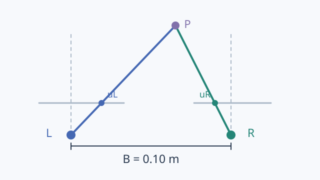
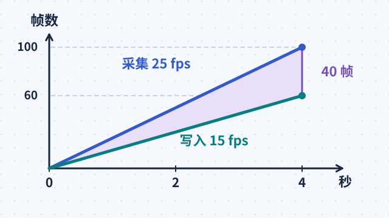

3D 高斯渲染入门
一组三维色斑如何从不同角度画出同一间屋子？从一个像素的颜色混合开始，理解 3D Gaussian Splatting。


从相机和点云的坐标开始，依次学习局部运动、回环和地图规划。

先读懂一幅图中的像素，再学习两台相机怎样测距、多种传感器怎样对齐。

围着同一个物体拍一圈，沿着采集、表面表示和新视角渲染一路读下去。

用一句中文和一小组计数开始，逐步读到文本表示、分类和逐词生成。

从机器人里的程序怎样传消息开始，读懂传感器数据，再追到网络字节和系统进程。

沿着状态、异步处理和交付三个环节，观察程序怎样在现实条件下可靠工作。